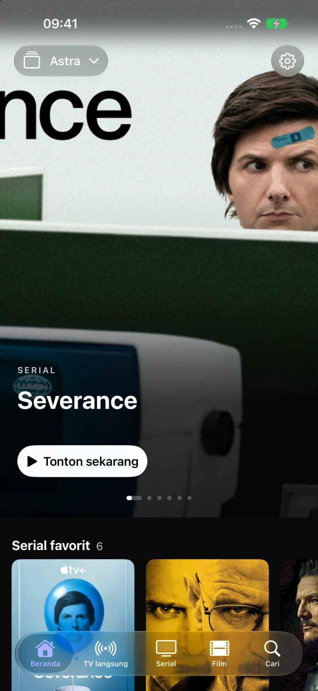
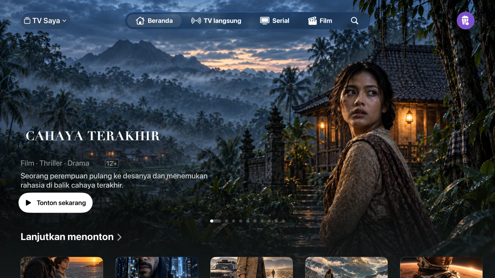
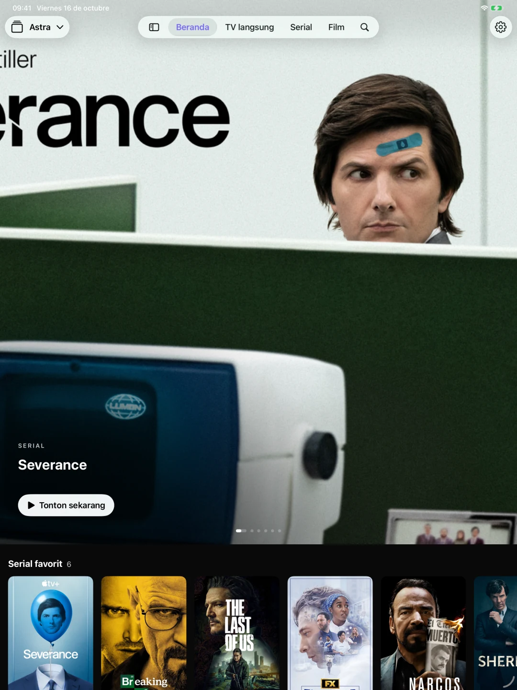

Daftar putar M3U dan Xtream
Tambahkan URL M3U/M3U8 atau koneksi Xtream. Beralih antar-daftar serta pisahkan katalog, favorit, dan riwayat masing-masing. Anda juga dapat mengimpor file M3U di iPhone dan iPad.
Tambahkan daftar putar M3U atau koneksi Xtream untuk memutar saluran, film, dan serial. Gratis, tanpa iklan dari Astra.
Gunakan daftar putar Anda sendiri. Belum tersedia di App Store. Anda yang memutuskan apakah akan mengirim email pemberitahuan peluncuran.

Tambahkan URL M3U/M3U8 atau koneksi Xtream. Beralih antar-daftar serta pisahkan katalog, favorit, dan riwayat masing-masing. Anda juga dapat mengimpor file M3U di iPhone dan iPad.
Telusuri saluran, lihat tayangan yang sedang berlangsung, dan cek panduan program XMLTV. Simpan saluran favorit Anda agar mudah diakses.
Jelajahi film dan serial, pilih episode, dan lanjutkan dari titik terakhir Anda berhenti menonton. Audio dan takarir (subtitle) tersedia jika disediakan oleh sumber konten Anda.
Tab di iPhone, bilah sisi di iPad, dan kontrol yang dirancang khusus untuk remote Apple TV. Daftar konten yang kompatibel, favorit, dan progres tontonan dapat disinkronkan melalui akun iCloud pribadi Anda.


AirPlay dan Picture-in-Picture menggunakan pemutar bawaan sistem jika sistem dan format mendukungnya. File yang diimpor secara lokal tidak ditransfer sebagai file yang dapat diputar ke Apple TV.
Peluncuran publik untuk iPhone, iPad, dan Apple TV sedang dipersiapkan. Astra belum tersedia di App Store. Anda dapat meminta notifikasi peluncuran melalui email.
Tidak. Astra tidak menjual atau menyediakan saluran, film, serial, daftar putar, ataupun langganan TV. Gunakan sumber konten yang memiliki izin penggunaan dari Anda.
Pustaka konten Anda tetap tersimpan di perangkat Anda. Data yang kompatibel dapat disinkronkan melalui basis data iCloud pribadi Anda. Statistik penggunaan dan laporan kerusakan bersifat opsional; fitur ini dinonaktifkan secara default dan pengaturannya dapat dikelola secara terpisah di menu Pengaturan (Settings).
Situs web ini tidak menggunakan analitik, iklan, formulir, ataupun cookie sendiri. Situs ini di-host oleh GitHub Pages yang mungkin mencatat informasi teknis kunjungan sesuai dengan pernyataan privasinya.
Dikembangkan oleh Juan Cazalla Estrella.